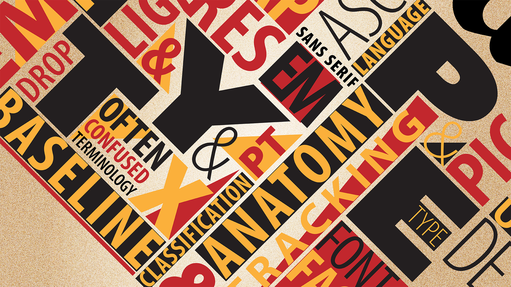
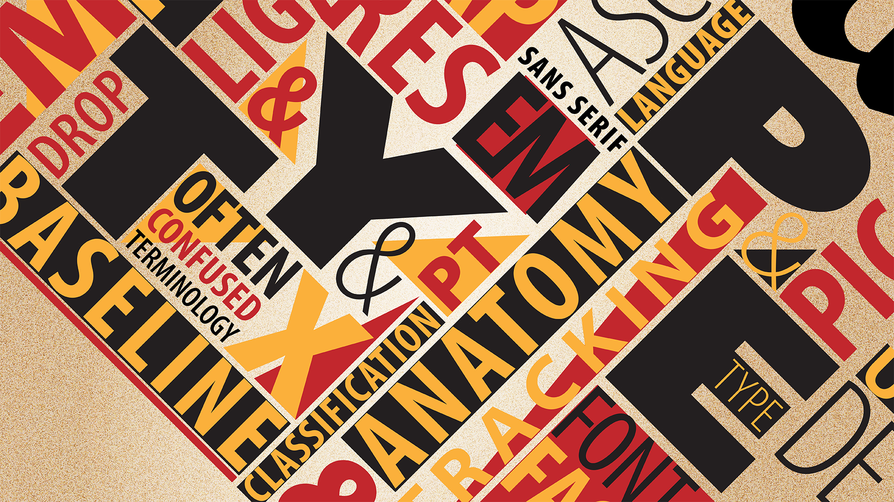

Introduksjon
HCI er en for kortelse for "Human Computer Intercation" og er rett og slett studiet av hvordan mennesket og maskin jobber sammen. Alle UI's(User interfaces) eller brukergrensesnitt som det heter på norsk er en form for human computer Intercation. GUI's eller grafiske brukergrensesnitt som Windows, IOS, Andriod og Mac er nok de mest brukte. Disse er eksempler som gjør at vi kan bruke/manipulere maskinene på effektiv, enkel og trygg måte.
HCI-elementer
- Kognisjon og persepsjon
-Hvordan vi oppfatter verden (teori)
- Brukerstyrt/brukerfokusert design
-Eller system/oppgavefokusert
- Design av interaksjon/brukergrensesnitt
- Brukertesting
Når man snakker om brukervennlighet kan man betegne det som hvor lett eller vanskelig interaksjonen er for mennesket. HCI forskere som studerer hvordan mennesket og maskin jobber sammen, designer også teknologi ut ifra det de lærer om observasjonene de gjør. Dette fører til at vi får teknologi som er mer brukervennlig og som lar oss mennesker samhandle med maskinene på en mer effektiv, trygg og enkel måte uten store problemer.

 
